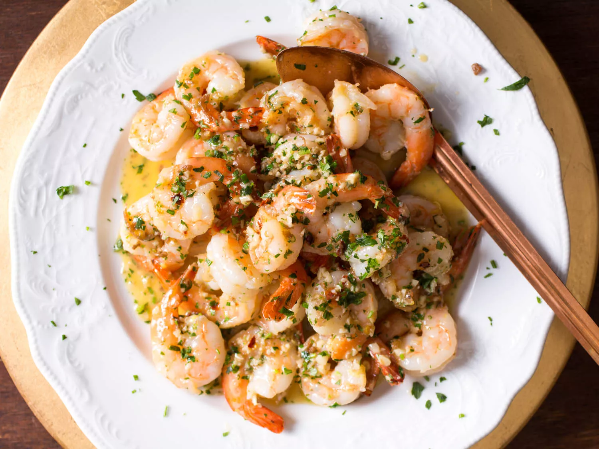

Shrimp Scampi

Shrimp Scampi is savory pasta dish that features shrimp in a garlic-butter-wine based sauce
and is typically served over pasta. The version below has been optimized by the fine folks at
Serious Eats
Ingredients
- 1 pound (450g) large shrimp, peeled and split down the back, veins removed
- Kosher salt
- 1/4 teaspoon baking soda
- 4 tablespoons (60ml) extra-virgin olive oil, divided, plus more as needed
- Pinch red pepper flakes
- 1/2 cup (120ml) dry vermouth
- 3 tablespoons (45g) unsalted butter, cut into tablespoon-size pieces
- 1 tablespoon (15ml) fresh juice and 1 teaspoon (4g) grated zest from 1 lemon
- 2 teaspoons (6g) minced parsley, tarragon, and chives
Directions
-
In a large bowl, toss together shrimp with 3/4 teaspoon (3g) kosher salt and
baking soda until evenly coated. Let stand for at least 10 minutes and up to 1 hour.
-
In a large skillet, heat 3 tablespoons (45ml) olive oil over high heat until shimmering.
Add half of shrimp in an even layer and cook, stirring and turning shrimp occasionally, until pink,
barely cooked through, and just starting to turn lightly golden in spots, about 2 minutes.
Using a slotted spoon, flexible slotted offset spatula, or tongs, transfer shrimp to a plate.
Repeat with remaining shrimp, adding more oil if necessary.
-
Add remaining 1 tablespoon (15ml) olive oil to skillet along with garlic and red pepper flakes and cook, stirring,
until garlic is just starting to turn golden, about 1 minute; lower heat if necessary to prevent scorching.
-
Add vermouth and boil over high heat, stirring and scraping up any browned bits, until raw alcohol smell is mostly
gone and vermouth has reduced by about half, about 3 minutes.
-
Add butter and cook, stirring and swirling pan rapidly as butter melts to create a silky, emulsified sauce. Remove
from heat, add lemon juice, and season with salt. Return to medium heat and bring to a simmer, stirring
constantly. (If sauce breaks, whisk in a teaspoon or two of water until sauce emulsifies again.)
-
Return shrimp to skillet, add herbs and lemon zest, and toss until shrimp are coated in sauce and warmed through.
Serve immediately.
You can find the original link to the recipe here